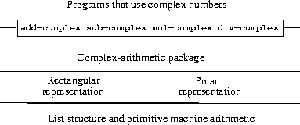

Introduzimos a abstração de dados, uma metodologia para estruturar sistemas de forma que grande parte de um programa possa ser especificada independentemente das opções envolvidas na implementação dos objetos de dados que o programa manipula. Por exemplo, vimos na seção 2.1.1 como separar a tarefa de projetar um programa que usa números racionais da tarefa de implementar números racionais em termos dos mecanismos primitivos da linguagem de computador para construir dados compostos. A ideia principal era erguer uma barreira de abstração - nesse caso, os seletores e construtores de números racionais (make-rat, numer, denom) - que isola a maneira como os números racionais são usados de sua representação subjacente em termos de estrutura de lista. Uma barreira de abstração semelhante isola os detalhes dos procedimentos que executam aritmética racional (add-rat, sub-rat, mul-rat, e div-rat) dos procedimentos de “nível superior” que usam números racionais. O programa resultante possui a estrutura mostrada na figura 2.1.
Essas barreiras de abstração de dados são ferramentas poderosas para controlar a complexidade. Isolando as representações subjacentes dos objetos de dados, podemos dividir a tarefa de projetar um programa grande em tarefas menores que podem ser executadas separadamente. Mas esse tipo de abstração de dados ainda não é poderoso o suficiente, porque nem sempre faz sentido falar da "representação subjacente" de um objeto de dados.
Por um lado, pode haver mais de uma representação útil para um objeto de dados, e gostaríamos de projetar sistemas que possam lidar com várias representações. Para dar um exemplo simples, números complexos podem ser representados de duas maneiras quase equivalentes: na forma retangular (partes reais e imaginárias) e na forma polar (magnitude e ângulo). Às vezes, a forma retangular é mais apropriada e, às vezes, a forma polar é mais apropriada. De fato, é perfeitamente plausível imaginar um sistema em que números complexos sejam representados nos dois sentidos e em que os procedimentos para manipular números complexos funcionem com qualquer uma das representações.
Mais importante, os sistemas de programação geralmente são projetados por muitas pessoas que trabalham por longos períodos de tempo, assim esses sistemas são sujeitos a requisitos que mudam com o tempo. Nesse ambiente, simplesmente não é possível que todos concordem com antecedência sobre as opções de representação de dados. Portanto, além das barreiras de abstração de dados que isolam a representação do uso, precisamos de barreiras de abstração que isolem diferentes opções de projeto e permitam que diferentes opções coexistam em um único programa. Além disso, como programas grandes geralmente são criados combinando módulos preexistentes que foram projetados isoladamente, precisamos de convenções que permitam aos programadores incorporar módulos em sistemas maiores aditivamente, isto é, sem ter que reprojetar ou reimplementar esses módulos.
Nesta seção, aprenderemos como lidar com dados que podem ser representados de diferentes maneiras por diferentes partes de um programa. Isso requer a construção de procedimentos genéricos - procedimentos que podem operar com dados que podem ser representados de mais de uma maneira. Nossa principal técnica para criar procedimentos genéricos será trabalhar em termos de objetos de dados que possuem etiquetas de tipo, ou seja, objetos de dados que incluem informações explícitas sobre como eles devem ser processados. Também discutiremos a programação orientada a dados, uma estratégia de implementação poderosa e conveniente para montar sistemas de forma aditiva com operações genéricas.
Começamos com o exemplo simples de número complexo. Veremos como as etiquetas de tipo e o estilo orientado a dados nos permitem projetar representações retangulares e polares separadas para números complexos, mantendo a noção de um objeto de dados abstrato "número complexo". Conseguiremos isso definindo procedimentos aritméticos para números complexos (add-complex, sub-complex, mul-complex e div-complex) em termos de seletores genéricos que acessam partes de um número complexo, independentemente de como o número é representado. O sistema de números complexos resultante, como mostrado na figura 2.19, contém dois tipos diferentes de barreiras de abstração. As barreiras de abstração “horizontal” desempenham o mesmo papel que as da figura 2.1. Eles isolam as operações de "nível superior" das representações de "nível inferior". Além disso, existe uma barreira “vertical” que nos permite projetar e instalar separadamente representações alternativas.
|  |
Na seção 2.5, mostraremos como usar etiquetas de tipo e estilo orientado a dados para desenvolver um pacote aritmético genérico. Isso fornece procedimentos (add, mul, e assim por diante) que podem ser usados para manipular todos os tipos de "números" e podem ser facilmente estendidos quando um novo tipo de número é necessário. Na seção 2.5.3, mostraremos como usar a aritmética genérica em um sistema que executa álgebra simbólica.
Desenvolveremos um sistema que executa operações aritméticas em números complexos como um exemplo simples, mas não realístico, de um programa que usa operações genéricas. Começamos discutindo duas representações plausíveis para números complexos como pares ordenados: forma retangular (parte real e parte imaginária) e forma polar (magnitude e ângulo).43 A seção 2.4.2 mostrará como ambas as representações podem ser feitas para coexistir em um único sistema através do uso de etiquetas de tipo e operações genéricas.
Como números racionais, números complexos são naturalmente representados como pares ordenados. O conjunto de números complexos pode ser pensado como um espaço bidimensional com dois eixos ortogonais, o eixo "real" e o eixo "imaginário". (Veja a figura 2.20). Desse ponto de vista, o número complexo z = x + iy (onde i2 = - 1) pode ser pensado como o ponto no plano cuja coordenada real é x e cuja coordenada imaginária é y. A adição de números complexos reduz nessa representação à adição de coordenadas:
Ao multiplicar números complexos, é mais natural pensar em termos de representação de um número complexo em forma polar, como uma magnitude e um ângulo (r e A na figura 2.20). O produto de dois números complexos é o vetor obtido esticando um número complexo pelo comprimento do outro e girando-o pelo ângulo do outro:
Portanto, existem duas representações diferentes para números complexos, que são apropriadas para operações diferentes. No entanto, do ponto de vista de alguém que escreve um programa que usa números complexos, o princípio da abstração de dados sugere que todas as operações para manipular números complexos devem estar disponíveis, independentemente de qual representação seja usada pelo computador. Por exemplo, geralmente é útil encontrar a magnitude de um número complexo especificado por coordenadas retangulares. Da mesma forma, geralmente é útil poder determinar a parte real de um número complexo especificado por coordenadas polares.
 |
Para projetar esse sistema, podemos seguir a mesma estratégia de abstração de dados que seguimos ao projetar o pacote de números racionais na seção 2.1.1. Suponha que as operações em números complexos sejam implementadas em termos de quatro seletores: real-part, imag-part, magnitude, e angle. Suponha também que temos dois procedimentos para construir números complexos: make-from-real-imag retorna um número complexo com partes reais e imaginárias especificadas e make-from-mag-ang retorna um número complexo com magnitude e ângulo especificados. Esses procedimentos possuem a propriedade de que, para qualquer número complexo z, ambos
(make-from-real-imag (real-part z) (imag-part z))
e
(make-from-mag-ang (magnitude z) (angle z))
produza números complexos que são iguais a z.
Usando esses construtores e seletores, podemos implementar aritmética em números complexos usando os "dados abstratos" especificados pelos construtores e seletores, assim como fizemos para números racionais na seção 2.1.1. Como mostrado nas fórmulas acima, podemos adicionar e subtrair números complexos em termos de partes reais e imaginárias, multiplicando e dividindo números complexos em termos de magnitudes e ângulos:
(define (add-complex z1 z2)
(make-from-real-imag (+ (real-part z1) (real-part z2))
(+ (imag-part z1) (imag-part z2))))
(define (sub-complex z1 z2)
(make-from-real-imag (- (real-part z1) (real-part z2))
(- (imag-part z1) (imag-part z2))))
(define (mul-complex z1 z2)
(make-from-mag-ang (* (magnitude z1) (magnitude z2))
(+ (angle z1) (angle z2))))
(define (div-complex z1 z2)
(make-from-mag-ang (/ (magnitude z1) (magnitude z2))
(- (angle z1) (angle z2))))
Para concluir o pacote de números complexos, precisamos escolher uma representação e implementar os construtores e seletores em termos de números primitivos e estrutura de lista primitiva. Há duas maneiras óbvias de fazer isso: podemos representar um número complexo na "forma retangular" como um par (parte real, parte imaginária) ou na "forma polar" como um par (magnitude, ângulo). Qual devemos escolher?
Para tornar as diferentes escolhas concretas, imagine que existem dois programadores, Ben Bitdiddle e Alyssa P. Hacker, que estão projetando representações independentemente para o sistema de números complexos. Ben escolhe representar números complexos em forma retangular. Com essa opção, a seleção das partes reais e imaginárias de um número complexo é simples, assim como a construção de um número complexo com determinadas partes reais e imaginárias. Para encontrar a magnitude e o ângulo, ou construir um número complexo com uma dada magnitude e ângulo, ele usa as relações trigonométricas

que relacionam as partes reais e imaginárias (x, y) com a magnitude e o ângulo (r, A).44 A representação de Ben é, portanto, dada pelos seguintes seletores e construtores:
(define (real-part z) (car z))
(define (imag-part z) (cdr z))
(define (magnitude z)
(sqrt (+ (square (real-part z)) (square (imag-part z)))))
(define (angle z)
(atan (imag-part z) (real-part z)))
(define (make-from-real-imag x y) (cons x y))
(define (make-from-mag-ang r a)
(cons (* r (cos a)) (* r (sin a))))
Alyssa, por outro lado, escolhe representar números complexos na forma polar. Para ela, a seleção da magnitude e do ângulo é direta, mas ela precisa usar as relações trigonométricas para obter as partes reais e imaginárias. A representação de Alyssa é:
(define (real-part z)
(* (magnitude z) (cos (angle z))))
(define (imag-part z)
(* (magnitude z) (sin (angle z))))
(define (magnitude z) (car z))
(define (angle z) (cdr z))
(define (make-from-real-imag x y)
(cons (sqrt (+ (square x) (square y)))
(atan y x)))
(define (make-from-mag-ang r a) (cons r a))
A disciplina de abstração de dados garante que a mesma implementação de add-complex, sub-complex, mul-complex e div-complex funcionará com a representação de Ben ou com a de Alyssa.
Uma maneira de visualizar a abstração de dados é como uma aplicação do "princípio do menor comprometimento". Ao implementar o sistema de números complexos na seção 2.4.1, podemos usar a representação retangular de Ben ou a representação polar de Alyssa. A barreira de abstração formada pelos seletores e construtores nos permite adiar até o último momento possível a escolha de uma representação concreta para nossos objetos de dados e, assim, reter a máxima flexibilidade no projeto de nosso sistema.
O princípio do menor comprometimento pode ser levado a extremos ainda maiores. Se desejarmos, podemos manter a ambiguidade da representação mesmo depois de projetarmos os seletores e os construtores e optar por usar a representação de Ben e a representação de Alyssa. Se ambas as representações forem incluídas em um único sistema, no entanto, precisaremos de alguma maneira para distinguir dados na forma polar de dados na forma retangular. Caso contrário, se nos pedissem, por exemplo, para encontrar a magnitude do par (3,4), não saberíamos se responderíamos 5 (interpretando o número na forma retangular) ou 3(interpretação do número na forma polar). Uma maneira simples de conseguir essa distinção é incluir uma etiqueta do tipo - o símbolo rectangular ou polar - como parte de cada complexo número. Então, quando precisamos manipular um número complexo, podemos usar a etiqueta para decidir qual seletor aplicar.
Para manipular dados etiquetados, assumiremos que temos procedimentos type-tag e contents que extraem de um objeto de dados a etiqueta e o conteúdo real (as coordenadas polares ou retangulares, no caso de um número complexo). Também postularemos um procedimento attach-tag que pega uma etiqueta e o conteúdo e produz um objeto de dados etiquetados. Uma maneira direta de implementar isso é usar a estrutura de lista comum:
(define (attach-tag type-tag contents)
(cons type-tag contents))
(define (type-tag datum)
(if (pair? datum)
(car datum)
(error "Bad tagged datum -- TYPE-TAG" datum)))
(define (contents datum)
(if (pair? datum)
(cdr datum)
(error "Bad tagged datum -- CONTENTS" datum)))
Usando esses procedimentos, podemos definir os predicados rectangular? e polar?, que reconhecem números polares e retangulares, respectivamente:
(define (rectangular? z)
(eq? (type-tag z) 'rectangular))
(define (polar? z)
(eq? (type-tag z) 'polar))
Com etiquetas de tipo, Ben e Alyssa agora podem modificar seu código para que suas duas representações diferentes possam coexistir no mesmo sistema. Sempre que Ben constrói um número complexo, ele o identifica como retangular. Sempre que Alyssa constrói um número complexo, ela o identifica como polar. Além disso, Ben e Alyssa devem garantir que os nomes de seus procedimentos não entrem em conflito. Uma maneira de fazer isso é Ben anexar o sufixo rectangular ao nome de cada um de seus procedimentos de representação e Alyssa anexar polar aos nomes dela. Aqui está a representação retangular revisada de Ben da seção 2.4.1:
(define (real-part-rectangular z) (car z))
(define (imag-part-rectangular z) (cdr z))
(define (magnitude-rectangular z)
(sqrt (+ (square (real-part-rectangular z))
(square (imag-part-rectangular z)))))
(define (angle-rectangular z)
(atan (imag-part-rectangular z)
(real-part-rectangular z)))
(define (make-from-real-imag-rectangular x y)
(attach-tag 'rectangular (cons x y)))
(define (make-from-mag-ang-rectangular r a)
(attach-tag 'rectangular
(cons (* r (cos a)) (* r (sin a)))))
e aqui está a representação polar revisada de Alyssa:
(define (real-part-polar z)
(* (magnitude-polar z) (cos (angle-polar z))))
(define (imag-part-polar z)
(* (magnitude-polar z) (sin (angle-polar z))))
(define (magnitude-polar z) (car z))
(define (angle-polar z) (cdr z))
(define (make-from-real-imag-polar x y)
(attach-tag 'polar
(cons (sqrt (+ (square x) (square y)))
(atan y x))))
(define (make-from-mag-ang-polar r a)
(attach-tag 'polar (cons r a)))
Cada seletor genérico é implementado como um procedimento que verifica a etiqueta de seu argumento e chama o procedimento apropriado para manipular dados desse tipo. Por exemplo, para obter a parte real de um número complexo, real-part examina a etiqueta para determinar se deve usar real-part-rectangular de Ben ou real-part-polar de Alyssa. Em qualquer um dos casos, usamos contents para extrair os dados sem marcação e crus e enviá-los para o procedimento retangular ou polar, conforme necessário:
(define (real-part z)
(cond ((rectangular? z)
(real-part-rectangular (contents z)))
((polar? z)
(real-part-polar (contents z)))
(else (error "Unknown type -- REAL-PART" z))))
(define (imag-part z)
(cond ((rectangular? z)
(imag-part-rectangular (contents z)))
((polar? z)
(imag-part-polar (contents z)))
(else (error "Unknown type -- IMAG-PART" z))))
(define (magnitude z)
(cond ((rectangular? z)
(magnitude-rectangular (contents z)))
((polar? z)
(magnitude-polar (contents z)))
(else (error "Unknown type -- MAGNITUDE" z))))
(define (angle z)
(cond ((rectangular? z)
(angle-rectangular (contents z)))
((polar? z)
(angle-polar (contents z)))
(else (error "Unknown type -- ANGLE" z))))
Para implementar as operações aritméticas de número complexo, podemos usar os mesmos procedimentos add-complex, sub-complex, mul-complex e div-complex da seção 2.4.1, porque os seletores que eles chamam são genéricos e, portanto, funcionarão com qualquer uma das representações. Por exemplo, o procedimento add-complex ainda é
(define (add-complex z1 z2)
(make-from-real-imag (+ (real-part z1) (real-part z2))
(+ (imag-part z1) (imag-part z2))))
Finalmente, devemos escolher entre construir números complexos usando a representação de Ben ou a representação de Alyssa. Uma escolha razoável é construir números retangulares sempre que tivermos partes reais e imaginárias e construir números polares sempre que tivermos magnitudes e ângulos:
(define (make-from-real-imag x y)
(make-from-real-imag-rectangular x y))
(define (make-from-mag-ang r a)
(make-from-mag-ang-polar r a))
O sistema de números complexos resultante possui a estrutura mostrada na figura 2.21. O sistema foi decomposto em três partes relativamente independentes: as operações aritméticas de número complexo, a implementação polar de Alyssa e a implementação retangular de Ben. As implementações polares e retangulares poderiam ter sido escritas por Ben e Alyssa trabalhando separadamente, e ambas podem ser usadas como representações subjacentes por um terceiro programador implementando os procedimentos aritméticos complexos em termos da interface abstrata do construtor ou seletor.
Como cada objeto de dados é marcado com seu tipo, os seletores operam nos dados de maneira genérica. Ou seja, cada seletor é definido para ter um comportamento que depende do tipo específico de dados ao qual é aplicado. Observe o mecanismo geral para fazer a interface das representações separadas: dentro de uma determinada implementação de representação (por exemplo, pacote polar de Alyssa), um número complexo é um par sem tipo (magnitude, ângulo). Quando um seletor genérico opera em um número do tipo polar, retira a etiqueta e passa o conteúdo para o código da Alyssa. Por outro lado, quando Alyssa constrói um número para uso geral, ela o identifica com um tipo para que possa ser reconhecido adequadamente pelos procedimentos de nível superior. Essa disciplina de remover e anexar etiquetas à medida que objetos de dados são passados de nível para nível pode ser uma estratégia organizacional importante, como veremos na seção 2.5.
A estratégia geral de verificar o tipo de dado e chamar um procedimento apropriado é chamada despachando no tipo. Essa é uma estratégia poderosa para obter modularidade no projeto do sistema. Por outro lado, a implementação da expedição como na seção 2.4.2 apresenta duas fraquezas significativas. Um ponto fraco é que os procedimentos genéricos de interface (real-part, imag-part, magnitude, e angle) deve conhecer todas as diferentes representações. Por exemplo, suponha que desejássemos incorporar uma nova representação para números complexos em nosso sistema de números complexos. Precisamos identificar essa nova representação com um tipo e, em seguida, adicionar uma cláusula a cada um dos procedimentos genéricos de interface para verificar o novo tipo e aplicar o seletor apropriado para essa representação.
Outra fraqueza da técnica é que, embora as representações individuais possam ser projetadas separadamente, devemos garantir que não haja dois procedimentos no sistema inteiro com o mesmo nome. É por isso que Ben e Alyssa tiveram que alterar os nomes de seus procedimentos originais da seção 2.4.1.
O problema subjacente a essas duas fraquezas é que a técnica para implementar interfaces genéricas não é aditiva. A pessoa que implementa os procedimentos seletores genéricos deve modificá-los sempre que uma nova representação é instalada, e as pessoas que fazem interface com as representações individuais devem modificar seu código para evitar conflitos de nome. Em cada um desses casos, as alterações que devem ser feitas no código são diretas, mas devem ser feitas, no entanto, e isso é uma fonte de inconveniência e erro. Isso não é um grande problema para o sistema de números complexos como está, mas suponha que não houvesse duas, mas centenas de representações diferentes para números complexos. E suponha que havia muitos seletores genéricos a serem mantidos na interface de dados abstratos. Suponha, de fato, que nenhum programador conheça todos os procedimentos de interface ou todas as representações. O problema é real e deve ser tratado em programas como sistemas de gerenciamento de banco de dados em larga escala.
O que precisamos é de um meio de modularizar ainda mais o projeto do sistema. Isso é fornecido pela técnica de programação conhecida como programação orientada a dados. Para entender como a programação orientada a dados funciona, comece com a observação de que, sempre que lidamos com um conjunto de operações genéricas comuns a um conjunto de tipos diferentes, lidamos com uma tabela bidimensional que contém as operações possíveis em um eixo e os tipos possíveis no outro eixo. As entradas na tabela são os procedimentos que implementam cada operação para cada tipo de argumento apresentado. No sistema de números complexos desenvolvido na seção anterior, a correspondência entre o nome da operação, o tipo de dados e o procedimento real foi espalhada entre as várias cláusulas condicionais nos procedimentos genéricos de interface. Mas a mesma informação poderia ter sido organizada em uma tabela, como mostra a figura 2.22.
A programação orientada a dados é a técnica de projetar programas para trabalhar diretamente com essa tabela. Anteriormente, implementamos o mecanismo que faz a interface do código aritmético complexo com os dois pacotes de representação como um conjunto de procedimentos em que cada um executa um despacho explícito no tipo. Aqui, implementaremos a interface como um procedimento único que consulta a combinação do nome da operação e do tipo de argumento na tabela para encontrar o procedimento correto a ser aplicado e, em seguida, aplica-o ao conteúdo do argumento. Se fizermos isso, para adicionar um novo pacote de representação ao sistema, não precisaremos alterar nenhum procedimento existente; precisamos apenas adicionar novas entradas à tabela.
 |
Para implementar este plano, assuma que temos dois procedimentos, put e get, para manipular a tabela de operações e tipos:
Por enquanto, podemos assumir que put e get estão incluídos em nossav linguagem. No capítulo 3 (seção 3.3.3, exercício 3.24), veremos como implementar essas e outras operações para manipular tabelas.
Aqui está como a programação orientada a dados pode ser usada no sistema de números complexos. Ben, que desenvolveu a representação retangular, implementa seu código exatamente como ele fez originalmente. Ele define uma coleção de procedimentos, ou um pacote, e os conectam com o restante do sistema, adicionando entradas à tabela que informam ao sistema como operar em números retangulares. Isso é feito chamando o seguinte procedimento:
(define (install-rectangular-package)
;; internal procedures
(define (real-part z) (car z))
(define (imag-part z) (cdr z))
(define (make-from-real-imag x y) (cons x y))
(define (magnitude z)
(sqrt (+ (square (real-part z))
(square (imag-part z)))))
(define (angle z)
(atan (imag-part z) (real-part z)))
(define (make-from-mag-ang r a)
(cons (* r (cos a)) (* r (sin a))))
;; interface to the rest of the system
(define (tag x) (attach-tag 'rectangular x))
(put 'real-part '(rectangular) real-part)
(put 'imag-part '(rectangular) imag-part)
(put 'magnitude '(rectangular) magnitude)
(put 'angle '(rectangular) angle)
(put 'make-from-real-imag 'rectangular
(lambda (x y) (tag (make-from-real-imag x y))))
(put 'make-from-mag-ang 'rectangular
(lambda (r a) (tag (make-from-mag-ang r a))))
'done)
Observe que os procedimentos internos aqui são os mesmos da seção 2.4.1 que Ben escreveu quando trabalhava isolado. Nenhuma alteração é necessária para fazer a interface com o restante do sistema. Além disso, como essas definições de procedimentos são internas ao procedimento de instalação, Ben não precisa se preocupar com conflitos de nomes com outros procedimentos fora do pacote retangular. Para fazer a interface com o restante do sistema, Ben instala seu procedimento real-part sob o nome da operação real-part e o tipo (rectangular) e da mesma forma para os outros seletores.45 A interface também define os construtores a serem usados pelo sistema externo.46 Estes são idênticos aos construtores definidos internamente por Ben, exceto que eles anexam a etiqueta.
O pacote polar de Alyssa é análogo:
(define (install-polar-package)
;; internal procedures
(define (magnitude z) (car z))
(define (angle z) (cdr z))
(define (make-from-mag-ang r a) (cons r a))
(define (real-part z)
(* (magnitude z) (cos (angle z))))
(define (imag-part z)
(* (magnitude z) (sin (angle z))))
(define (make-from-real-imag x y)
(cons (sqrt (+ (square x) (square y)))
(atan y x)))
;; interface to the rest of the system
(define (tag x) (attach-tag 'polar x))
(put 'real-part '(polar) real-part)
(put 'imag-part '(polar) imag-part)
(put 'magnitude '(polar) magnitude)
(put 'angle '(polar) angle)
(put 'make-from-real-imag 'polar
(lambda (x y) (tag (make-from-real-imag x y))))
(put 'make-from-mag-ang 'polar
(lambda (r a) (tag (make-from-mag-ang r a))))
'done)
Embora Ben e Alyssa ainda usem seus procedimentos originais definidos com os mesmos nomes que os outros (por exemplo, real-part), essas definições agora são internas a diferentes procedimentos (consulte a seção 1.1. 8), para que não haja conflito de nome.
Os seletores aritméticos complexos acessam a tabela por meio de um procedimento geral de "operação" chamada apply-generic, que aplica uma operação genérica a alguns argumentos. Apply-generic procura na tabela sob o nome da operação e os tipos dos argumentos e aplica o procedimento resultante, se houver algum:47
(define (apply-generic op . args)
(let ((type-tags (map type-tag args)))
(let ((proc (get op type-tags)))
(if proc
(apply proc (map contents args))
(error
"No method for these types -- APPLY-GENERIC"
(list op type-tags))))))
Usando apply-generic, podemos definir nossos seletores genéricos da seguinte maneira:
(define (real-part z) (apply-generic 'real-part z))
(define (imag-part z) (apply-generic 'imag-part z))
(define (magnitude z) (apply-generic 'magnitude z))
(define (angle z) (apply-generic 'angle z))
Observe que isso não muda se uma nova representação for adicionada ao sistema.
Também podemos extrair da tabela os construtores a serem usados pelos programas externos aos pacotes para formar números complexos a partir de partes reais e imaginárias e de magnitudes e ângulos. Como na seção 2.4.2, construímos números retangulares sempre que temos partes reais e imaginárias e números polares sempre que temos magnitudes e ângulos:
(define (make-from-real-imag x y)
((get 'make-from-real-imag 'rectangular) x y))
(define (make-from-mag-ang r a)
((get 'make-from-mag-ang 'polar) r a))
Exercício 2.73. A seção 2.3.2 descreveu um programa que executa diferenciação simbólica:
(define (deriv exp var)
(cond ((number? exp) 0)
((variable? exp) (if (same-variable? exp var) 1 0))
((sum? exp)
(make-sum (deriv (addend exp) var)
(deriv (augend exp) var)))
((product? exp)
(make-sum
(make-product (multiplier exp)
(deriv (multiplicand exp) var))
(make-product (deriv (multiplier exp) var)
(multiplicand exp))))
<more rules can be added here>
(else (error "unknown expression type -- DERIV" exp))))
Podemos considerar esse programa como executando um despacho sobre o tipo de expressão a ser diferenciada. Nesta situação, a "etiqueta de tipo" do dado é o símbolo do operador algébrico (como +) e a operação que é executada é deriv. Podemos transformar esse programa em estilo orientado a dados reescrevendo o procedimento derivado básico como
(define (deriv exp var)
(cond ((number? exp) 0)
((variable? exp) (if (same-variable? exp var) 1 0))
(else ((get 'deriv (operator exp)) (operands exp)
var))))
(define (operator exp) (car exp))
(define (operands exp) (cdr exp))
a. Explique o que foi feito acima. Por que não podemos assimilar os predicados number? e same-variable? no envio orientado a dados?
b. Escreva os procedimentos para derivadas de somas e produtos e o código auxiliar necessário para instalá-los na tabela usada pelo programa acima.
c. Escolha qualquer regra de diferenciação adicional que você desejar, como a dos expoentes (exercício 2.56) e instale-a neste sistema orientado a dados.
d. Neste manipulador algébrico simples, o tipo de uma expressão é o operador algébrico que a une. Suponha, no entanto, que indexemos os procedimentos da maneira oposta, para que a linha de expedição em deriv parecesse
((get (operator exp) 'deriv) (operands exp) var)
Quais alterações correspondentes no sistema derivativo são necessárias?
Exercício 2.74. Insatiable Enterprises, Inc., é uma empresa conglomerada altamente descentralizada que consiste em um grande número de divisões independentes localizadas em todo o mundo. As instalações de computadores da empresa acabaram de ser interconectadas por meio de um esquema inteligente de interface de rede que faz com que toda a rede pareça a qualquer usuário um único computador. O presidente da Insatiable, em sua primeira tentativa de explorar a capacidade da rede de extrair informações administrativas de arquivos da divisão, fica consternado ao descobrir que, embora todos os arquivos da divisão tenham sido implementados como estruturas de dados no Scheme, a estrutura de dados específica usada varia de divisão para divisão. Uma reunião de gerentes da divisão é convocada às pressas para buscar uma estratégia para integrar os arquivos que satisfaçam as necessidades da sede, preservando a autonomia existente das divisões.
Mostre como essa estratégia pode ser implementada com a programação orientada a dados. Como exemplo, suponha que os registradores de pessoal de cada divisão consistam em um único arquivo, que contém um conjunto de registradores digitados nos nomes dos funcionários. A estrutura do conjunto varia de divisão para divisão. Além disso, o registrador de cada funcionário é, ele próprio, um conjunto (estruturado diferentemente de divisão para divisão) que contém informações digitadas em identificadores, como address e salary. Em particular:
a. Implemente, na sede, um procedimento get-record que recupera o registrador de um funcionário especificado de um arquivo pessoal especificado. O procedimento deve ser aplicável a qualquer arquivo da divisão. Explique como os arquivos das divisões individuais devem ser estruturados. Em particular, que tipo de informação deve ser fornecida?
b. Implemente, na sede, um procedimento get-salary que retorna as informações de salário do registrador de um determinado funcionário a partir do arquivo de pessoal de qualquer divisão. Como o registrador deve ser estruturado para que essa operação funcione?
c. Implemente na sede um procedimento find-employee-record. Isso deve pesquisar todos os arquivos das divisões para o registrador de um determinado funcionário e retornar o registrador. Suponha que esse procedimento use como argumento o nome de um funcionário e uma lista de todos os arquivos das divisões.
d. Quando o Insatiable assume uma nova empresa, que mudanças devem ser feitas para incorporar as novas informações de pessoal ao sistema central?
A ideia principal da programação orientada a dados é manipular operações genéricas em programas, lidando explicitamente com tabelas de operação e tipo, como a tabela na figura 2.22. O estilo de programação que usamos na seção 2.4.2 organizou o envio necessário no tipo, fazendo com que cada operação cuide de seu próprio envio. Com efeito, isso decompõe a tabela de operação e tipo em linhas, com cada procedimento de operação genérico representando uma linha da tabela.
Uma estratégia de implementação alternativa é decompor a tabela em colunas e, em vez de usar "operações inteligentes" despachadas em tipos de dados, trabalhar com "objetos de dados inteligentes" despachados em nomes de operações. Podemos fazer isso organizando para que um objeto de dados, como um número retangular, seja representado como um procedimento que tome como entrada o nome da operação necessária e execute a operação indicada. Em tal disciplina, make-from-real-imag poderia ser escrito como
(define (make-from-real-imag x y)
(define (dispatch op)
(cond ((eq? op 'real-part) x)
((eq? op 'imag-part) y)
((eq? op 'magnitude)
(sqrt (+ (square x) (square y))))
((eq? op 'angle) (atan y x))
(else
(error "Unknown op -- MAKE-FROM-REAL-IMAG" op))))
dispatch)
O procedimento apply-generic correspondente, que aplica uma operação genérica a um argumento, agora simplesmente alimenta o nome da operação no objeto de dados e permite que o objeto faça o trabalho:48
(define (apply-generic op arg) (arg op))
Observe que o valor retornado por make-from-real-imag é um procedimento - o procedimento interno dispatch. Este é o procedimento que é chamado quando apply-generic solicita que uma operação seja executada.
Esse estilo de programação é chamado passagem de mensagem. O nome vem da imagem de que um objeto de dados é uma entidade que recebe o nome da operação solicitada como uma "mensagem". Já vimos um exemplo de passagem de mensagens na seção 2.1.3, na qual vimos como cons, car e cdr pode ser definido sem objetos de dados, mas apenas procedimentos. Aqui vemos que a passagem de mensagens não é um truque matemático, mas uma técnica útil para organizar sistemas com operações genéricas. No restante deste capítulo, continuaremos a usar a programação orientada a dados, em vez da passagem de mensagens, para discutir operações aritméticas genéricas. No capítulo 3, retornaremos à passagem de mensagens e veremos que ela pode ser uma ferramenta poderosa para estruturar programas de simulação.
Exercício 2.75. Implemente o construtor make-from-mag-ang no estilo de passagem de mensagens. Este procedimento deve ser análogo ao procedimento make-from-real-imag fornecido acima.
Exercício 2.76. À medida que um sistema grande com operações genéricas evolui, novos tipos de objetos de dados ou novas operações podem ser necessários. Para cada uma das três estratégias - operações genéricas com despacho explícito, estilo orientado a dados e estilo de passagem de mensagens - descreva as alterações que devem ser feitas em um sistema para adicionar novos tipos ou novas operações. Qual organização seria mais apropriada para um sistema no qual novos tipos devem ser adicionados com frequência? Qual seria o mais apropriado para um sistema no qual novas operações frequentemente devem ser adicionadas?
43 Nos sistemas computacionais reais, a forma retangular é preferível à forma polar na maioria das vezes devido a erros de arredondamento na conversão entre retangulares e forma polar. É por isso que o exemplo de número complexo não é realista. No entanto, fornece uma ilustração clara do projeto de um sistema usando operações genéricas e uma boa introdução aos sistemas mais substanciais a serem desenvolvidos posteriormente neste capítulo.
44 A função arco tangente referida por aqui, calculada pela atan do Scheme, é definida de forma a receber dois argumentos y e x e retornar o ângulo cuja tangente é y/x. Os sinais dos argumentos determinam o quadrante do ângulo.
45 Usamos a lista (rectangular) em vez do símbolo rectangular para permitir a possibilidade de operações com vários argumentos, nem todos do mesmo tipo.
46 O tipo em que os construtores estão instalados não precisa ser uma lista porque um construtor é sempre usado para criar um objeto de um tipo específico.
47 Apply-generic usa a notação de cauda pontilhada descrita no exercício 2.20, porque operações genéricas diferentes podem levar diferentes números de argumentos. Em apply-generic, op possui como valor o primeiro argumento para apply-generic e args como valor uma lista dos argumentos restantes.
Apply-generic também usa o procedimento primitivo apply, que recebe dois argumentos, um procedimento e uma lista. Apply aplica o procedimento, usando os elementos da lista como argumentos. Por exemplo,
(apply + (list 1 2 3 4))
returns 10.
48 Uma limitação dessa organização é que ela permite apenas procedimentos genéricos de um argumento.